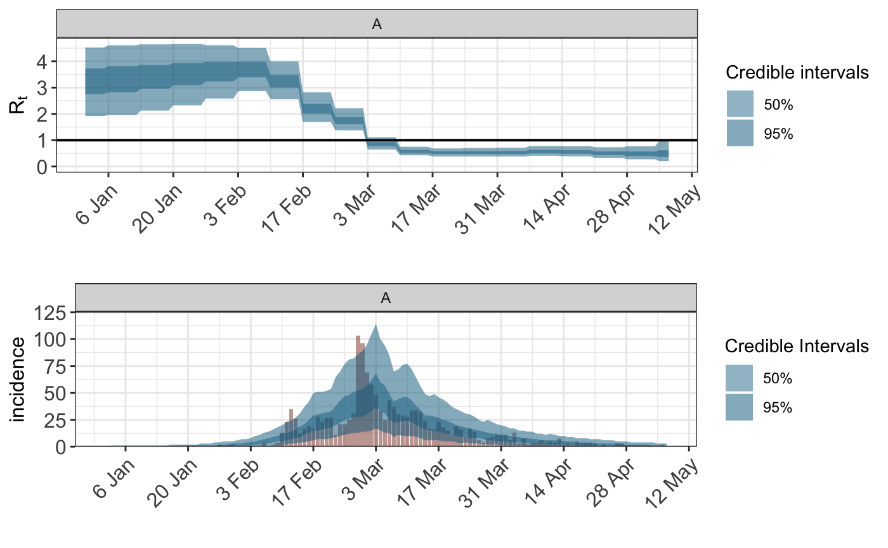
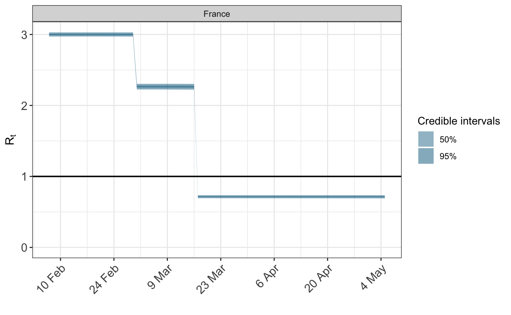
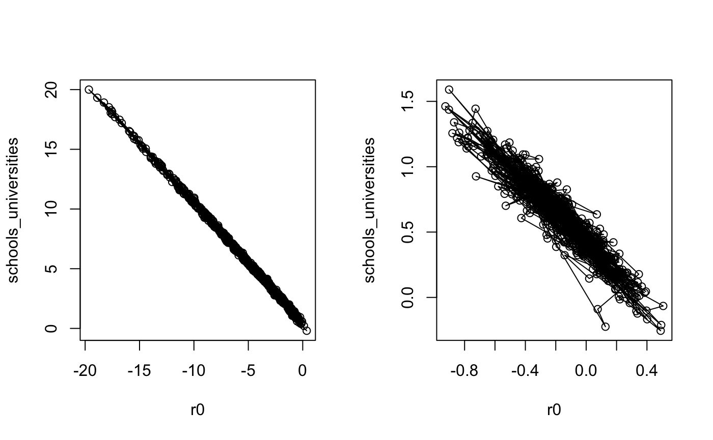

We use the SARS data from 2003 as an example.
In the example below, the sampler would have difficulties converging with the default random starting values of rstan. It usually stays in a part of the parameter space where all of the population gets infected.
Below is one approach how to resolve this. This is at the moment hard-coded. Future versions of epidemia may provide a more convenient way of doing this.
We first fit the model to cumulative counts to get starting values for the main run (the fit to cumulative counts will not be correct itself due an assumed independence of the cumulative counts).
First we load the data.
## $incidence
## [1] 1 0 0 1 0 0 2 0 2 2 1 1 1 0 0 0 4 1
## [19] 2 4 13 23 35 26 12 17 19 17 28 23 27 27 11 21 21 25
## [37] 31 103 96 69 58 48 33 25 43 37 30 29 28 34 34 32 24 17
## [55] 16 23 18 15 11 19 16 9 17 14 6 4 8 9 11 11 11 6
## [73] 13 3 8 2 4 4 6 4 5 4 8 2 3 2 5 3 3 4
## [91] 3 1 2 0 1 3 3 1 1 1 1 1 1 1 0 2 0
##
## $si_distr
## [1] 0.000 0.001 0.012 0.043 0.078 0.104 0.117 0.116 0.108 0.094 0.078 0.063
## [13] 0.049 0.038 0.028 0.021 0.015 0.011 0.008 0.005 0.004 0.003 0.002 0.001
## [25] 0.001Then we set up and run the model for cumulative observed cases.
sars <- SARS2003 sars$incidence <- c(rep(NA,20),cumsum(sars$incidence)) ## pad before initialisation sars$sarsdate <- as.Date("2003-01-01")+seq(0,along.with=sars$incidence) obs <- !is.na(sars$incidence) args <- list(formula=Rt(country,date)~ rw(time=week,prior_scale=0.1), data=data.frame(country="A", date=sars$sarsdate, week = format(sars$sarsdate, "%V")), obs=list( incidence=list( odata=data.frame(country="A", date=sars$sarsdate[obs],incidence=sars$incidence[obs]), rates=list(means=data.frame(factor("A"),1), scale=.01), pvec=c(.25,.5,.75,1), ptype="distribution" ) ), seed_days=7, algorithm="sampling", r0=3, pops=data.frame(country="A",pop=1e6), si=sars$si, prior = rstanarm::normal(location=0,scale=.2), prior_intercept = rstanarm::normal(location=0,scale=.5), prior_tau = rstanarm::exponential(rate=4) )
args$debug=TRUE ## to get original parameter values args$sampling_args <- list(iter=100,control=list(adapt_delta=0.95,max_treedepth=15),seed=77239,chains=1) fitpre <- do.call("epim",args)
## Warning: The largest R-hat is 1.22, indicating chains have not mixed.
## Running the chains for more iterations may help. See
## http://mc-stan.org/misc/warnings.html#r-hat## Warning: Bulk Effective Samples Size (ESS) is too low, indicating posterior means and medians may be unreliable.
## Running the chains for more iterations may help. See
## http://mc-stan.org/misc/warnings.html#bulk-ess## Warning: Tail Effective Samples Size (ESS) is too low, indicating posterior variances and tail quantiles may be unreliable.
## Running the chains for more iterations may help. See
## http://mc-stan.org/misc/warnings.html#tail-ess## Warning: Markov chains did not converge! Do not analyze results!The above run may give some error messages, but they can be ignored as this run is only used to get starting values for the chains of the main run.
Now update the model to work with individually reported cases.
sars <- SARS2003 sars$incidence <- c(rep(NA,20),sars$incidence) ## pad before initialisation sars$sarsdate <- as.Date("2003-01-01")+seq(0,along.with=sars$incidence) obs <- !is.na(sars$incidence) args$obs=list( incidence=list( odata=data.frame(country="A", date=sars$sarsdate[obs],incidence=sars$incidence[obs]), rates=list(means=data.frame(factor("A"),1), scale=.01), pvec=c(.25,.25,.25,.25), ptype="density" ) )
Next we prepare the initialisation values. This is very crude at the moment and better ways probably do exist.
initf <- function(){ i <- sample(1:50,1) res <- lapply(rstan::extract(fitpre$stanfit), function(x) { if (length(dim(x))==1){ as.array(x[i]) } else if (length(dim(x))==2) x[i,] else x[i,,] } ) for (j in names(res)){ if (length(res[j])==1) res[[j]] <- as.array(res[[j]]) } res$tau_raw <- c(res$tau_raw) res$noise<- NULL res } args$debug <- F args$sampling_args <- list(iter=1000,control=list(adapt_delta=0.95,max_treedepth=15),seed=713,init=initf)
Now we starte the main sampling run.
fit <- do.call("epim",args)
And here are the resulting fits.
library(gridExtra) grid.arrange(plot_rt(fit), plot_obs(fit,"incidence"), nrow=2)

In our experience, a leading cause of pathologies in the model fitting stage is collinearity between the predictors explaining the time-varying reproduction number. This can lead to divergent transitions and long sampling times.
Take the example of modeling the effect of several non-pharmaceutical interventions (NPIs). There are two primary reasons why these effects can be highly confounded. Most obviously, the interventions will often take place in quick succession, and so they will be highly collinear. The second cause is the time distribution from infection to an event - for example a death. This is often such that conditional on observing a death at a particular time, there is a wide range of plausible dates at which the individual was infected. Any effects on the reproduction number from interventions occuring close to one-another will be smoothed over in the death data, and the signal as to which intervention actually had an effect becomes weaker.
One possible remedy for this is to pool the effects over different groups. This incorporates more data to delineate each effect. Another approach is to regularize the problem by using more informative priors. Of course this should be done in a principled manner; for example by using results from previous studies.
In this section, we illustrate this phenomenon with a simulated dataset. The code below simulates death data using an assumed initial reproduction number, and assumed effect sizes for the schools_universities and lockdown NPIs. The aim will be to recover the parameters under which the data was simulated.
data("EuropeCovid") EuropeCovid$data[EuropeCovid$data$country == "France" & EuropeCovid$data$date >= as.Date("2020-03-01"), "schools_universities"] = 1 args <- EuropeCovid args$group_subset <- "France" args$algorithm <- "sampling" args$sampling_args <- list(iter = 1e3, seed=12345) args$formula <- R(country, date) ~ schools_universities + lockdown args$prior_PD <- TRUE # set some reasonable prior values args$r0 <- 3 args$prior_intercept <- rstanarm::normal(location=0, scale = 0.01) args$prior <- rstanarm::normal(location = c(0.5,1.5), scale=0.01) fm <- do.call("epim", args) # look at prior predictive distribution plot_rt(fm)
 In the above code, we have assumed that the initial reproduction number is close to 3, and have assumed regression parameters for the schools/universities and lockdown NPIs of around 0.5 and 1.5 respectively. Now we simulate daily death counts under this model, which will be used in place of the true death data.
# use posterior data from prior run obs <- posterior_predict(fm, type="deaths")$France dates <- obs[,1] obs <- as.integer(rowMeans(obs[,-1])) # replace France deaths data with simulated data deaths <- args$obs$deaths w <- deaths$odata$country == "France" deaths$odata <- deaths$odata[w,] deaths$odata$deaths <- obs args$obs$deaths <- deaths
Fitting the model to the simulared data with uninformative priors for the initial reproduction number and effects.
# fit the model with uninformative priors args$prior_PD <- FALSE args$prior_intercept <- rstanarm::normal(scale=10) args$prior <- rstanarm::normal(scale=10) system.time(fm2 <- do.call("epim", args))
## Warning: There were 1728 transitions after warmup that exceeded the maximum treedepth. Increase max_treedepth above 10. See
## http://mc-stan.org/misc/warnings.html#maximum-treedepth-exceeded## Warning: Examine the pairs() plot to diagnose sampling problems## Warning: Bulk Effective Samples Size (ESS) is too low, indicating posterior means and medians may be unreliable.
## Running the chains for more iterations may help. See
## http://mc-stan.org/misc/warnings.html#bulk-ess## user system elapsed
## 998.828 10.257 306.696Notice the warnings over exceeding the maximum-tree depath and the long run time. The reason for this will become clear soon. But first we attempt to regularize the problem by assuming more information on the initial reproduction number.
# more informative prior intercept args$prior_intercept <- rstanarm::normal(scale=0.5) args$prior <- rstanarm::normal(scale=0.5) system.time(fm3 <- do.call("epim", args))
## user system elapsed
## 183.748 0.857 50.141This seems to more computationally stable. As shown below, the problem is caused by posterior correlation between the initial reproduction rate and the effect size of the schools/universities NPI. This NPI occurs before there is much informative data on deaths, and when the number of infections is likely to be quite low. Therefore it is difficult to distinguish whether early on in the disease there was a high reproduction rate and a large effect from the NPI, or a lower initial reproduction rate and a less substantial effect.
We now plot the posterior correlations between these two parameters.
par(mfrow=c(1,2)) mat <- as.array(fm2) r0 <- mat[,1,"(Intercept)"] schools_universities <- mat[,1,"schools_universities"] plot(r0, schools_universities, type = "o") mat <- as.array(fm3) r0 <- mat[,1,"(Intercept)"] schools_universities <- mat[,1,"schools_universities"] plot(r0, schools_universities, type = "o")
 The left hand plot shows the posterior distribution from fm2, where less informative priors were used. The divergent transitions appear to be caused by the small step-size required to traverse the distribution horizontally/vertically, and the large step size desired for traversing the diagonal; there is a ridge in the posterior. For more information on why this can pose a problem for Hamiltonian Monte Carlo, please refer to the stan user guide. Using stronger prior information reduces the posterior correlation and the sampler explores the space better, as shown in the right hand plot.
print(fm2, digits=2)
##
## Rt regression parameters:
## -----
## coefficients:
## Median MAD_SD
## (Intercept) -4.85 3.89
## schools_universities 5.37 3.90
## lockdown 1.49 0.17
##
## Other model parameters:
## -----
## Median MAD_SD
## seeds[France] 2.70 0.89
## tau 9.90 9.67
## phi[deaths] 19.07 3.22
## noise[France,deaths] 0.99 0.10print(fm3, digits=2)
##
## Rt regression parameters:
## -----
## coefficients:
## Median MAD_SD
## (Intercept) -0.21 0.28
## schools_universities 0.65 0.33
## lockdown 1.56 0.15
##
## Other model parameters:
## -----
## Median MAD_SD
## seeds[France] 21.21 9.08
## tau 26.71 18.92
## phi[deaths] 19.00 3.00
## noise[France,deaths] 1.00 0.10